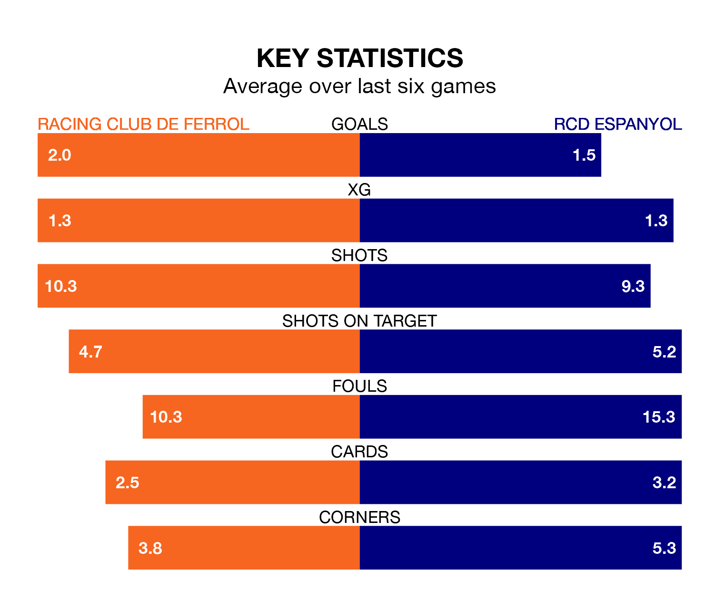

RCD Espanyol travel looking to secure a first win in five Segunda División games against Racing Club de Ferrol on late Saturday.
RCD Espanyol have lost one and drawn three matches since they last earned three points – against AD Alcorcón on November 26.
They face a Racing side who have won three and lost one over that time.
With 34 goals in 21 games so far this season, Espanyol are the league's joint-second-highest scorers with 1.6 goals per game. And they are conceding fewer than average, letting in 24 goals at a rate of 1.1 per game.
Racing are also above average scorers, with 1.4 goals per game, compared to a league average of 1.2. They have conceded 1.1 goals per game.
Ferrol are second in the table after 21 games, of which they have won 10 and drawn seven, earning 37 points.
RCD Espanyol are three places behind Racing Club de Ferrol in fifth, with nine wins and seven draws putting them on 34 points.
In Javi Puado, the visitors have the league's sharpest shooter so far this season. He has notched 10 goals in 17 appearances.
His goal rate of one every 142 minutes is quicker than that of Iker Losada Aragunde, the home side's top scorer with a goal every 275 minutes, and a total of six goals in 21 games.
Racing's last match was on December 21, a 1-0 win against Real Valladolid, with Álvaro Giménez getting the goal for Racing Club de Ferrol.
Espanyol drew 3-3 with Burgos CF last time out, on December 19, with Martin Braithwaite, Puado Díaz and Sergi Gómez on the scoresheet.
Updated: 12:57, 02/01/24